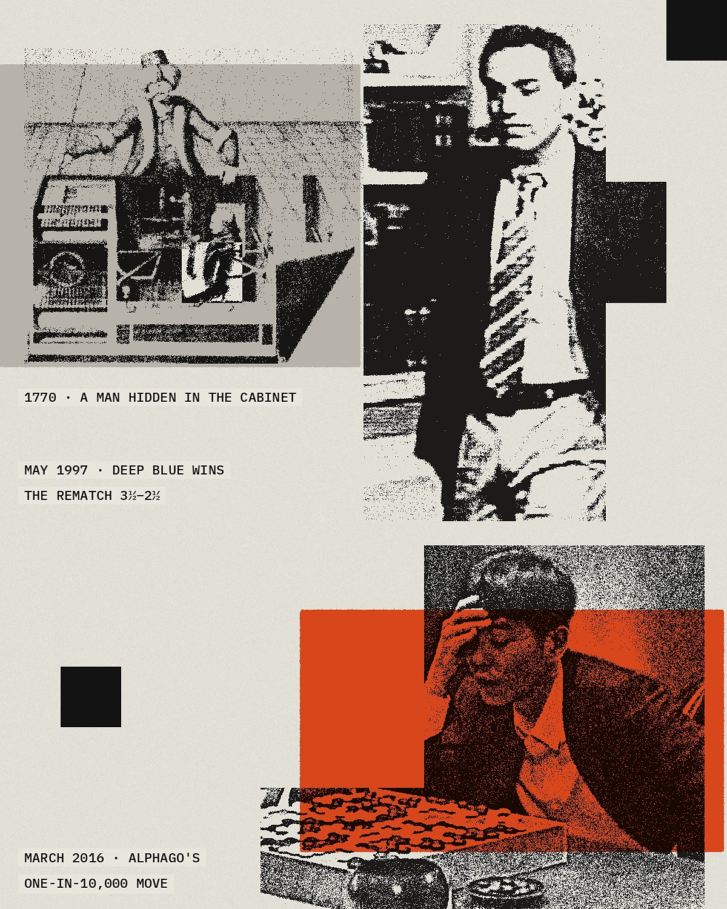

History of AI
Artificial intelligence was named in 1955, but the wish to make minds is far older.
This history runs from myths of bronze guardians to today's chatbots. It follows the machines, the ideas, the laboratories, the money and the laws.
All six movements read the same history in their own way, and each was named at a moment in it. Every moment opens to its source.

The generative race
2022 to now
Chatbots reach the public, the labs race to build ever larger data centres, and states start to write AI laws.
Named in this eraTechno-optimism · 2023Effective accelerationism · 2022
Words from this eraHumanist AI2026humanist superintelligence2025FLOP2024 (in law)reasoning model2024superagencyby 2024doomerby 2023frontier model2023pause2023TESCREAL2023chain of thought2022Constitutional AI2022decelby 2022e/acc2022emergent abilities2022jailbreak2022network state2022red teamingby 2022
2026Machines that talkGPT-6 and “the AGI era”OpenAI's president greets its new model with talk of AGI.
OpenAI; Greg Brockman
On 3 September 2026 OpenAI began releasing GPT-6 Astra, first to selected organisations. It was trained on more than 100,000 GPUs at OpenAI's Stargate site in Texas. OpenAI had slowed the release for extra safety tests, after finding that its cyber skills could reach the “critical” level of its own framework. Its president, Greg Brockman, told reporters “Welcome to the AGI era”, a personal view rather than a formal declaration.
2026WarningsHumanist AIMicrosoft sets out rules to keep its own models under human control.
Microsoft AI; Mustafa Suleyman
Microsoft published a Humanist AI code of conduct for its own models and put it to a six-week public consultation. It says people must keep meaningful control, and that models should stay subordinate and never set their own goals. It rejects the race to an all-purpose superintelligence, and Microsoft plans to use the revised code to guide model development from 2027.
Axios, “Microsoft: ‘People matter more than AI’”, 14 September 2026
2026Laws and statesAnthropic and the PentagonA lab refuses two military uses, and the Pentagon labels it a supply-chain risk.
Anthropic; Pete Hegseth, US defence secretary; OpenAI
In early 2026 the Pentagon sought any lawful use of AI models, but Anthropic ruled out mass surveillance of Americans and fully autonomous weapons. On 27 February the defence secretary, Pete Hegseth, moved to label it a supply-chain risk, a tag usually kept for foreign adversaries. Within hours OpenAI announced its own deal with the Pentagon, and the designation was made official on 5 March. Anthropic sued: in August a federal judge ruled the designation unlawful, but in September an appeals court upheld a parallel one.
2025Chips and dataDeepSeek-R1A Chinese lab gives away a reasoning model, and Nvidia's shares fall 17%.
DeepSeek
On 20 January 2025 the Chinese company DeepSeek released R1, a reasoning model it said performed on par with OpenAI's o1. Its weights were free to download and adapt under the MIT licence. Its paper reported that strong reasoning emerged in a sibling model, R1-Zero, trained by reinforcement learning without first studying labelled examples. A week later Nvidia's shares fell 16.9% in one trading day, losing nearly $600 billion in market value.
2025Chips and dataThe Stargate ProjectOpenAI and partners plan $500 billion of AI infrastructure in the United States.
OpenAI, SoftBank, Oracle and MGX; President Donald Trump
On 21 January 2025 President Trump announced the Stargate Project at the White House, with OpenAI's Sam Altman beside him. The new company planned to invest $500 billion in US AI infrastructure over four years, starting with $100 billion at once. SoftBank, OpenAI, Oracle and MGX were its first investors, and building was under way in Texas. The plans involved no US government money.
2024Symbols or networksTwo Nobel prizes for AINeural-network pioneers and AlphaFold's makers win Nobel prizes in physics and chemistry.
John Hopfield, Geoffrey Hinton, Demis Hassabis, John Jumper
On 8 October 2024 the Nobel Prize in Physics went to John Hopfield and Geoffrey Hinton. The Royal Swedish Academy of Sciences cited foundational discoveries that enable machine learning with artificial neural networks. The next day Demis Hassabis and John Jumper shared half the chemistry prize, for predicting protein structures with AlphaFold. David Baker won the other half, for computational protein design.
2024Logic and calculationOpenAI's o1 reasoning modelA model trained to think at length before it answers.
OpenAI
On 12 September 2024 OpenAI presented o1, a model trained by reinforcement learning to work through a long chain of thought before answering. Along the way it learns to catch and correct its own mistakes. OpenAI reported that it improved with more training and with more time spent thinking. It ranked in the 89th percentile on Codeforces programming contests.
OpenAI, “Learning to Reason with LLMs”, openai.com, 12 September 2024
2024Laws and statesThe EU AI ActEurope's law sorts AI systems by risk and bans some uses outright.
European Union
The European Union's AI Act entered into force on 1 August 2024. It sorts AI systems into four levels of risk, from minimal to unacceptable. Its first bans applied from 2 February 2025, among them social scoring and untargeted scraping of images to build facial-recognition databases. An amendment in force from July 2026 delayed the rules for high-risk systems to December 2027 or August 2028.
2023Laws and statesThe Bletchley Park summitTwenty-eight countries and the EU agree a declaration on the risks of frontier AI.
UK government; 28 countries and the European Union
On 1 and 2 November 2023 the British government hosted an AI Safety Summit at Bletchley Park. Twenty-eight countries and the European Union, the United States and China among them, agreed the Bletchley Declaration. It warned of the potential for “serious, even catastrophic, harm” from the most capable frontier models. They pledged to support shared research on frontier AI safety, and to meet again in 2024.
2023Booms and wintersThe OpenAI board crisisOpenAI's board removes Sam Altman, and within two weeks he is back.
OpenAI's board; Sam Altman
On 17 November 2023 OpenAI's board removed Sam Altman as chief executive, saying he had been “not consistently candid” with it. Nearly all the company's staff threatened to quit and join him at Microsoft unless the directors resigned. By the end of the month Altman was back, under a new board chaired by Bret Taylor. Two departing directors, Helen Toner and Tasha McCauley, had ties to effective altruism.
2023Laws and statesBiden's executive order on AIThe White House requires developers of the largest models to report to the government.
President Joe Biden; revoked by President Donald Trump
On 30 October 2023 President Biden signed Executive Order 14110, on the safe, secure and trustworthy development of AI. Under the Defense Production Act, developers of the most powerful models had to report their training and red-team test results. The threshold was training with more than 10²⁶ operations. President Trump revoked the order on 20 January 2025.
2023WarningsA statement on extinction riskLab leaders and pioneers rank AI's extinction risk with pandemics and nuclear war.
Center for AI Safety; Geoffrey Hinton
In May 2023 the Center for AI Safety published a single sentence. “Mitigating the risk of extinction from AI should be a global priority,” it said, alongside pandemics and nuclear war. Signers included Yoshua Bengio, Geoffrey Hinton and the heads of OpenAI, Google DeepMind and Anthropic. Weeks earlier Hinton had left Google, so that he could speak freely about the risks of AI.
2023Machines that talkGPT-4OpenAI's GPT-4 takes in images and text and passes a simulated bar exam.
OpenAI
On 14 March 2023 OpenAI released GPT-4, a large multimodal model that accepts images as well as text. It passed a simulated bar exam with a score around the top 10% of test takers. Its technical report withheld the model's size, hardware, training compute and data. It went to paying ChatGPT Plus subscribers and, through a waitlist, to developers.
2023WarningsThe pause letterAn open letter asks AI labs to pause their biggest training runs.
Future of Life Institute
The Future of Life Institute asked all AI labs to pause, for at least six months, the training of systems more powerful than GPT-4. If they did not, governments should step in with a moratorium. Labs and outside experts would use the time to agree shared safety protocols. Elon Musk was among the early signers, and the letter has since gathered more than 31,000 signatures.
Future of Life Institute, “Pause Giant AI Experiments: An Open Letter”, 22 March 2023
2023Booms and wintersMeta's Llama and open weightsMeta's LLaMA leaks online, and Llama 2 is released with its weights.
Meta
On 24 February 2023 Meta announced LLaMA, large language models of up to 65 billion parameters, for approved researchers only. Within two weeks the full model had leaked, after instructions for downloading it were posted on 4chan. In July Meta released Llama 2 free for research and commercial use, with its weights. Meta argued that openness made models safer, because developers could stress-test them.
2022Machines that talkChatGPT is releasedOpenAI's free chatbot reaches an estimated 100 million users in two months.
OpenAI
On 30 November 2022 OpenAI released ChatGPT, a chatbot fine-tuned from a GPT-3.5 model, as a free research preview. Trained with feedback from human trainers, it could answer follow-up questions, admit mistakes and decline inappropriate requests. OpenAI warned that its answers could sound plausible yet be wrong. By January it had about 100 million monthly users, according to Similarweb data.
Transformers and scale
2017 to 2022
One architecture, the transformer, trained on ever more text and computing power.
Words from this erafoundation model2021stochastic parrot2021test-time computeby 2021mechanistic interpretability2020scaling laws2020Progress Studies2019the bitter lesson2019large language modelby 2018longtermism2017RLHF2017 (the method)transformer2017
2022Booms and wintersStable Diffusion goes publicAn image generator's weights are released for anyone to download and run.
Stability AI
On 22 August 2022 Stability AI released Stable Diffusion, which turns text prompts into images, with its weights free to download. The licence, CreativeML OpenRAIL-M, allowed commercial use but made users responsible for using it ethically and lawfully. The model needed a graphics card with about 7 GB of memory, so it could run on recent consumer hardware.
2022Chips and dataChinchilla and compute-optimal trainingDeepMind finds that large models need far more data for their size.
Jordan Hoffmann, Sebastian Borgeaud, Arthur Mensch and colleagues, DeepMind
A DeepMind team found that large language models had been trained on too little data for their size. For a fixed computing budget, model size and training data should grow in equal proportion. Their 70-billion-parameter model, Chinchilla, used the same compute as the 280-billion-parameter Gopher, with about four times the data. It outperformed Gopher and GPT-3 across a wide range of tasks.
2021Booms and wintersAnthropic is foundedA former OpenAI research chief starts a company focused on AI safety.
Dario Amodei, Daniela Amodei
Dario Amodei, formerly OpenAI's vice-president of research, founded Anthropic with his sister Daniela. They set it up as a public benefit corporation and called it an AI safety and research company. In May 2021 it raised $124 million, led by Jaan Tallinn, with Dustin Moskovitz and Eric Schmidt among the backers. It aimed to build large AI systems that are steerable, interpretable and robust.
2020Symbols or networksAlphaFold 2 at CASP14DeepMind's AlphaFold predicts protein shapes with accuracy rivalling laboratory methods.
DeepMind
Predicting a protein's 3D shape from its sequence of amino acids had challenged biologists for about 50 years. At the CASP14 prediction contest, DeepMind's AlphaFold reached a median score of 92.4 GDT across all targets. A score of around 90 is informally considered competitive with experimental methods.
DeepMind, “AlphaFold: a solution to a 50-year-old grand challenge in biology”, 30 November 2020
2020Machines that talkGPT-3A model ten times bigger learns new tasks from a few examples.
Tom B. Brown, Benjamin Mann, Nick Ryder and colleagues, OpenAI
OpenAI researchers described GPT-3, a language model with 175 billion parameters. That was about ten times more than any earlier dense language model. Shown a few examples in plain text, it could take on new tasks without further training. Human judges found it hard to tell its news articles from ones written by people.
2020Chips and dataScaling lawsOpenAI researchers find that language models improve along smooth, predictable curves.
Jared Kaplan (Johns Hopkins University and OpenAI), Sam McCandlish and colleagues at OpenAI
Jared Kaplan, Sam McCandlish and colleagues measured how language models improve as they grow. The models' prediction error fell along smooth power laws in model size, data and training compute. Some trends held across more than seven orders of magnitude. The curves showed how best to spend a fixed computing budget, on very large models trained on modest data.
2019Booms and wintersOpenAI becomes capped-profitThe non-profit lab takes in investors to pay for computing power.
OpenAI; Microsoft
In March 2019 OpenAI, founded as a non-profit, created a “capped-profit” company to raise money. Investors' returns were limited, at first to 100 times their stake, and the non-profit's board kept control. OpenAI said it needed billions of dollars for cloud computing, talent and AI supercomputers. In July Microsoft invested $1 billion and became its exclusive cloud provider.
2019WarningsGPT-2 and staged releaseOpenAI holds back a language model, citing fears of misuse.
OpenAI
OpenAI described GPT-2, a language model with 1.5 billion parameters trained on text from 8 million web pages. Citing concerns about malicious uses, it withheld the trained model and released only a much smaller one. It then released larger versions in stages, leaving time between them to study risks and benefits.
2018Symbols or networksBERTA Google model learns language by reading each word's context on both sides.
Jacob Devlin, Ming-Wei Chang, Kenton Lee and Kristina Toutanova, Google
Google researchers released BERT, short for Bidirectional Encoder Representations from Transformers. It learned from unlabelled text, using the words on both sides of each word. Adapted with one extra output layer, it set new best results on eleven language tasks. From October 2019 it helped Google Search understand about one in ten English searches in the United States.
2017Symbols or networksAttention Is All You NeedGoogle researchers propose the Transformer, the design behind today's language models.
Ashish Vaswani, Noam Shazeer, Niki Parmar, Jakob Uszkoreit, Llion Jones, Aidan Gomez, Łukasz Kaiser, Illia Polosukhin
Eight researchers, most of them at Google Brain and Google Research, proposed a network built only on attention, without recurrence or convolutions. They called it the Transformer. It translated better than earlier systems and trained far faster, in 3.5 days on eight GPUs for its best English–French model. BERT and GPT-4 were both built on it.
Deep learning
2012 to 2017
Neural networks return, running on graphics chips and large datasets, and beat people at Go.
Words from this erareward hackingby 2016token2015–16distillation2015hallucination2010salignmentby 2014importance, neglectedness, tractabilityc. 2013earning to giveby 2012instrumental convergence2012orthogonality thesis2012Tool AI2012
2017WarningsThe Asilomar AI PrinciplesAI researchers and others agree on 23 principles for beneficial AI.
Future of Life Institute
At a conference at Asilomar in January 2017, participants drew up 23 principles for beneficial AI. Each won the support of at least 90% of participants, in a survey after group discussions. They included aligning highly autonomous systems with human values, and avoiding an arms race in lethal autonomous weapons.
The FLI Team, “A Principled AI Discussion in Asilomar”, Future of Life Institute, 18 January 2017
2016Machines at playAlphaGo beats Lee SedolA program defeats one of the world's best Go players, four games to one.
DeepMind; Lee Sedol
In Seoul, from 9 to 15 March 2016, DeepMind's AlphaGo beat Lee Sedol by four games to one. Lee was a nine-dan professional with 18 world titles. In the second game AlphaGo played a move that had a one-in-10,000 chance of being played by a human. Lee won the fourth game with a move just as unlikely.

2015Booms and wintersOpenAI is foundedA non-profit lab launches with $1 billion pledged to make AI benefit everyone.
Sam Altman, Elon Musk, Greg Brockman, Ilya Sutskever
OpenAI launched as a non-profit research company, free of any need to make a financial return. Its aim was to advance digital intelligence in the way most likely to benefit humanity as a whole. Backers including Sam Altman, Elon Musk, Greg Brockman, Reid Hoffman and Peter Thiel committed $1 billion. Altman and Musk were co-chairs, and Ilya Sutskever was research director.
2015WarningsThe Puerto Rico conferenceAI builders meet on safety, and an open letter calls for beneficial AI.
Future of Life Institute; Elon Musk
In January 2015 the Future of Life Institute brought leading AI researchers from academia and industry to Puerto Rico. An open letter that followed called for research to make increasingly capable AI robust and beneficial. Stuart Russell, Demis Hassabis and Stephen Hawking were among its signers. Within two weeks of the meeting Elon Musk gave the institute $10 million for such research.
2014WarningsBostrom's SuperintelligenceA philosopher argues that a machine smarter than us could decide our fate.
Nick Bostrom
The Oxford philosopher Nick Bostrom argued that machines may one day surpass humans in general intelligence. Such a superintelligence could become very powerful, and humanity's fate could depend on it, as the fate of gorillas now depends on us. Humanity has one advantage, he wrote: it gets to make the first move. The book asks how to use it to make an intelligence explosion survivable.
2014Symbols or networksGenerative adversarial networksTwo networks compete, one forging data and the other spotting fakes.
Ian Goodfellow, Yoshua Bengio and colleagues, Université de Montréal
Ian Goodfellow and colleagues at the Université de Montréal proposed a new way to train networks that generate data. A generator makes samples, while a discriminator tries to tell them apart from real training data. The generator is trained to make the discriminator err, in a two-player game.
2014Booms and wintersGoogle buys DeepMindGoogle buys the London AI start-up, reportedly for more than $500 million.
Google; Demis Hassabis, Shane Legg, Mustafa Suleyman
Google bought DeepMind, a London company founded by Demis Hassabis, Shane Legg and Mustafa Suleyman. The Information reported a price of more than $500 million. Google reportedly agreed to set up an ethics board, so that DeepMind's technology would not be abused. Facebook had reportedly held talks to buy it in late 2013.
2013Booms and wintersGoogle buys DNNresearchGoogle hires the ImageNet winners by buying their start-up.
Google; Geoffrey Hinton, Alex Krizhevsky, Ilya Sutskever
Google bought DNNresearch, the start-up Geoffrey Hinton had formed in 2012 with his students Alex Krizhevsky and Ilya Sutskever. It wanted their work on deep neural networks for image and voice search. Krizhevsky and Sutskever moved to Google, while Hinton split his time between Google and the University of Toronto. The terms were not disclosed.
2013Symbols or networksWords as vectorsGoogle researchers turn words into numbers that capture their meaning.
Tomas Mikolov, Kai Chen, Greg Corrado and Jeffrey Dean, Google
Tomas Mikolov and colleagues at Google showed how to learn a list of numbers, a vector, for each word from huge amounts of text. Training on 1.6 billion words took less than a day. As Mikolov's earlier work had shown, simple sums on such vectors capture meaning: king minus man plus woman lands closest to queen.
2012Symbols or networksA deep network wins ImageNetA neural network wins an image-recognition contest by a wide margin.
Alex Krizhevsky, Ilya Sutskever and Geoffrey Hinton, University of Toronto
A University of Toronto team, Alex Krizhevsky, Ilya Sutskever and Geoffrey Hinton, won the 2012 ImageNet image-recognition challenge, whose results came out in October. Its deep convolutional network missed the right label in its top five guesses for 15.3% of test images, against 26.2% for the runner-up. The network had 60 million parameters and took five to six days to train on two GTX 580 graphics cards.
2012Chips and dataThe Google Brain catA network trained on YouTube frames learns to detect cats without labels.
Quoc Le, Andrew Ng, Jeff Dean and colleagues, Google and Stanford
The team trained a neural network with a billion connections on 10 million unlabelled images, frames taken from YouTube videos. Training ran for three days on 1,000 machines with 16,000 processor cores. Without being told what to look for, the network grew detectors for faces, human bodies and cat faces. On 20,000 ImageNet categories it reached 15.8 per cent accuracy, a 70 per cent relative gain on the previous best.
Learning from data
1993 to 2012
Statistics takes over from hand-written rules, and machines beat champions at chess and quiz shows.
Named in this eraEffective altruism · 2011Rationalism · 2009Singularitarianism · 2000
Words from this eraeffective altruism2011accelerationism2010p(doom)by 2009foomby 2008neoreaction2008fine-tuningby 2006pre-trainingby 2006longevity escape velocity2004the proactionary principlec. 2004paperclip maximiser2003existential risk2002Friendly AIby 2001recursive self-improvementc. 2000the law of accelerating returns1999superintelligence1998AGI1997agent1995the technocapital singularity1994morphological freedom1993synthetic data1993
2011Machines that talkSiriApple puts a voice assistant on its new iPhone.
Apple
Apple announced the iPhone 4S on 4 October 2011 with Siri, “an intelligent assistant that helps you get things done just by asking”. Users could speak to make calls, send messages, schedule meetings and reminders, or look up facts. Siri launched as a beta, in English, French and German.
Apple, “Apple Launches iPhone 4S, iOS 5 & iCloud”, press release, 4 October 2011
2011Machines at playWatson wins Jeopardy!IBM's question-answering machine beats two champions on television.
IBM Research, led by David Ferrucci
In a televised two-match contest over three days, Watson beat Ken Jennings and Brad Rutter, the show's two foremost champions. It answered questions put in natural language without being connected to the internet. The room-sized system used 90 servers with 2,880 processor cores. Watson won $77,147, against $24,000 for Jennings and $21,600 for Rutter.
2010Booms and wintersDeepMind is foundedA small start-up sets out to understand and recreate intelligence.
Demis Hassabis, Shane Legg and Mustafa Suleyman
Hassabis, Legg and Suleyman founded DeepMind in 2010, aiming to answer big questions by understanding and recreating intelligence. Hassabis later called it a tiny start-up working in a very unfashionable area. In August 2010 he met the investor Peter Thiel at his home, after the Singularity Summit. Thiel went on to invest £1.4 million, and let the company stay in London.
2009Chips and dataImageNetPrinceton researchers build a vast library of labelled images.
Jia Deng, Li Fei-Fei, Kai Li and colleagues, Princeton University
ImageNet sorted photographs into the categories of WordNet, a database of English words. At its debut it held 3.2 million images in 5,247 categories, and aimed at around 50 million. Workers on Amazon Mechanical Turk checked each image, with several voting independently.
2006Chips and dataCUDA opens graphics chips to computingNvidia lets programmers use its graphics chips for general calculation.
Nvidia
On 16 November 2006 Nvidia unveiled CUDA, with a C compiler for programming its graphics processors. It ran on the new GeForce 8800, whose 128 processor cores could cooperate on one problem. In 2009 a Stanford team reported training deep belief nets up to 70 times faster on such chips than on a dual-core processor.
2006Symbols or networksDeep belief netsHinton's group shows how to train networks many layers deep.
Geoffrey Hinton, Simon Osindero and Yee-Whye Teh
The paper gave a fast, greedy method that trains a deep network one layer at a time, before slower fine-tuning. Its model of handwritten digits, with three hidden layers, classified them better than the best discriminative methods. Hinton was then leading CIFAR's Neural Computation and Adaptive Perception programme, whose members included Yann LeCun and Yoshua Bengio.
2005Made beingsStanley wins the desert raceA robot car drives 132 miles of desert with no one aboard.
Stanford Racing Team, led by Sebastian Thrun
In 2004 no vehicle finished DARPA's Grand Challenge across the desert, and its $1 million prize went unclaimed. On 8 October 2005 five teams completed the 132-mile course. Stanford's Stanley, a modified Volkswagen Touareg, won in just under seven hours and took the $2 million prize.
1998Symbols or networksLeNet and the MNIST digitsA convolutional network learns to read handwriting, and millions of cheques.
Yann LeCun, Léon Bottou, Yoshua Bengio and Patrick Haffner
The paper argued that networks trained by backpropagation could classify handwritten characters with minimal preprocessing. Its convolutional network, LeNet-5, was tested on MNIST, a set of 60,000 training digits built from two US NIST collections. On that test, convolutional networks outperformed every other technique compared. A cheque-reading system built on these methods read several million cheques a day.
1997Symbols or networksLong short-term memoryA recurrent network learns to remember across long sequences.
Sepp Hochreiter and Jürgen Schmidhuber
Recurrent networks trained by backpropagation struggled to link events far apart in time, because their error signals faded. Hochreiter and Schmidhuber added memory cells that keep the error flowing, with gates that control access to them. On artificial tasks their network bridged time lags of more than 1,000 steps.
1997Machines at playDeep Blue beats KasparovAn IBM computer defeats the world chess champion in a match.
IBM Research (Feng-hsiung Hsu, Murray Campbell, Joe Hoane and others), against Garry Kasparov
IBM hired Hsu and Campbell in 1989 to build a chess computer. In February 1996 Kasparov beat it 4–2, though it won the first game. In the May 1997 rematch in New York, Deep Blue won 3½–2½. It used 32 processors and could evaluate 200 million chess positions a second.

1993WarningsThe coming technological singularityVinge tells a NASA symposium that the human era may soon end.
Vernor Vinge
At a symposium held by NASA's Lewis Research Center and the Ohio Aerospace Institute, Vinge predicted superhuman intelligence within thirty years. He named four routes, from intelligent computers and networks that wake up to close human–computer links and improved biology. Shortly after, he argued, “the human era will be ended”.
Expert systems and the winters
1974 to 1993
Rule-based expert systems boom in business, and funding for AI dries up twice.
Words from this erasingularitarian1991mind children1988backpropagation1986deep learning1986 / 2006AI winterby 1984the Singularity1983bicycle for the mindc. 1980
1992Machines at playTD-GammonA neural network teaches itself backgammon by playing against itself.
Gerald Tesauro, IBM
Tesauro's program joined a neural network to temporal-difference learning, a form of reinforcement learning. Starting from random weights, it learned from the results of games against itself. At the 1992 World Cup of Backgammon it played 38 exhibition games against top players and lost by only 7 points overall. Experts later adopted some of its opening moves.
1988Made beingsMind ChildrenA roboticist predicts that robots will soon do everything people do.
Hans Moravec
Moravec predicted that robots would soon do everything people do, only better, and then go further. A reviewer read “soon” as within about fifty years. Like natural children, the robots would make their own way while their human parents faded. Vernor Vinge cited the book in 1993.
1987Booms and wintersThe second AI winterThe expert-systems boom ends, AI firms close and budgets fall.
AI companies, the American Association for Artificial Intelligence, DARPA
Membership of the American Association for Artificial Intelligence peaked at 16,421 in 1987, then fell. Sponsors had expected more than the systems delivered, and Lisp machine makers lost out to makers of ordinary workstations. Several AI companies closed. Between 1987 and 1989, DARPA's budget for basic AI and Strategic Computing research fell from $47 million to $31 million.
1986Symbols or networksBackpropagationNeural networks return, with a way to train their hidden layers.
David Rumelhart, Geoffrey Hinton and Ronald Williams
A letter in Nature described back-propagation, which adjusts every weight in a layered network to reduce its error. Hidden units, neither input nor output, came by themselves to represent useful features of a task. That year Rumelhart, James McClelland and their PDP group published two volumes on parallel distributed processing, computation modelled on the brain. Their networks of simple units were at odds with Newell and Simon's symbol systems.
1984Symbols or networksCyc beginsA project sets out to type common sense into a computer, fact by fact.
Douglas Lenat, at MCC in Austin, Texas
In the autumn of 1984 Lenat left Stanford for MCC, the American consortium formed in answer to Japan's Fifth Generation project. His team set out to enter millions of everyday facts and rules of thumb by hand. The name comes from the middle of “encyclopedia”, since Cyc should know enough to read one. Lenat first thought it needed a couple of million general assertions, and later put the figure nearer 200 million.
1983Booms and wintersStrategic ComputingDARPA launches a billion-dollar programme for intelligent military machines.
Robert Kahn and Robert Cooper, DARPA
DARPA's plan, written up in October 1983, aimed to move expert systems, vision and speech out of the laboratory and into military use. Its showcase projects were a pilot's associate, a naval battle-management system and an autonomous land vehicle. Congress, worried by Japan's Fifth Generation project, approved the money. From 1983 to 1993 DARPA spent just over $1 billion on it.
1982Booms and wintersJapan's Fifth GenerationJapan launches a ten-year plan for computers that reason and converse.
Japan's Ministry of International Trade and Industry (MITI) and its institute ICOT, led by Kazuhiro Fuchi
MITI's project aimed at computers that draw inferences from large knowledge bases and talk with people in natural language. ICOT built parallel inference machines based on logic programming, with Prolog as the starting point. The plan stirred fear in the United States that Japan would overtake its computer industry. By 1992 the project was fizzling out, short of many goals, after spending about $400 million.
1980Booms and wintersXCON goes to workAn expert system configures computers for Digital Equipment Corporation.
John McDermott, Carnegie Mellon University, for Digital Equipment Corporation (DEC)
McDermott's R1 worked out how to configure DEC's VAX-11/780 computers, using 772 if–then rules in June 1980. Developed into XCON, it went into use that year at DEC's plant in Salem, New Hampshire. By 1989 DEC's configuration systems held about 17,500 rules, and DEC estimated their net return at over $40 million a year.
1976Symbols or networksMYCINA Stanford program advises doctors on infections, one rule at a time.
Edward Shortliffe, with Bruce Buchanan and Stanley Cohen, Stanford University
Described in Shortliffe's 1976 book, MYCIN advised physicians on bacterial infections, asking questions and explaining its reasoning. Its knowledge sat in a few hundred if–then rules drawn from experts, each with a certainty factor. In evaluations, a majority of reviewers rated 70 per cent of its therapies acceptable. Keeping the rules apart from the reasoning engine let others reuse it for new fields, as EMYCIN did.
1975Booms and wintersDARPA demands military payoffsThe Pentagon's research agency turns AI work towards military needs.
George Heilmeier and J. C. R. Licklider, DARPA
The Mansfield Amendment of 1969 had already tied Defense Department research to specific military purposes. When Heilmeier became DARPA's director in 1975, he asked for roadmaps and shorter-term results. In an April 1975 email, Licklider warned AI leaders of pressure to redirect university work to military problems. Heilmeier declined to continue DARPA's speech-understanding programme, which he judged to be basic research.
The birth of AI
1943 to 1974
The field is named, and the first programs prove theorems, learn and talk.
Named in this eraTranshumanism · 1957
Words from this erathe drowning child1972exit1970cryonics1965intelligence explosion1965augmentation1962reinforcement learning1961machine learning1959transhumanism1957artificial intelligence1955Turing test1950cybernetics1948neural network1943
1973Booms and wintersThe Lighthill reportA British survey finds that AI has not delivered what it promised.
Sir James Lighthill, for the Science Research Council
The Science Research Council asked the Cambridge mathematician to review AI, and published his report in 1973. He backed work on automation and on models of the brain, but found the bridge between them, robots and language, disappointing. Its methods, he argued, would founder on the combinatorial explosion. The report led to deep cuts in British AI research, among them Donald Michie's robot work at Edinburgh.
1969Symbols or networksPerceptronsTwo MIT scientists prove what simple neural networks cannot do.
Marvin Minsky and Seymour Papert
Their book analysed Rosenblatt's perceptrons mathematically. It proved that networks with a single layer of adjustable weights cannot compute some simple functions. Some have blamed it for a fading interest in neural networks. Nils Nilsson doubted that, and Geoffrey Hinton later said the book never proved neural nets were nonsense.
1966Made beingsShakey the robotA wheeled robot at SRI perceives its rooms and plans its moves.
SRI's Artificial Intelligence Center (Charles Rosen, Nils Nilsson, Bertram Raphael and others)
Work began at SRI in March 1966, under a contract from ARPA. Shakey carried a camera, a range finder and bump sensors, and planned its way through a set of rooms. SRI calls it the first mobile robot that could perceive and reason about its surroundings. The agency, renamed DARPA in 1972, declined to fund more, and the project ended that year.
1966Machines that talkELIZAA simple program plays a therapist, and users credit it with understanding.
Joseph Weizenbaum, MIT
Weizenbaum's program ran on MIT's MAC time-sharing system. It scanned typed sentences for key words and answered from rules kept in a separate script. Its scripts made it answer like a Rogerian psychotherapist, a role in which knowing little about the world seems natural. Weizenbaum observed that users lent the program knowledge and insight it did not have.
1965WarningsThe first ultraintelligent machineA statistician foresees machines that design ever better machines.
I. J. Good
Good defined an ultraintelligent machine as one that could far surpass any human in every intellectual activity. Designing machines is one such activity, so it could build better machines, and an intelligence explosion would follow. The first such machine would be “the last invention that man need ever make”. He added one condition, that the machine be docile enough to tell us how to control it.
1960WarningsMoral consequences of automationThe founder of cybernetics warns that learning machines may outrun their makers.
Norbert Wiener
Writing in Science, Wiener pointed to checkers programs that beat their own programmers after 10 to 20 hours of play. Machines that learn, he argued, can act in ways their makers did not foresee, and faster than people can react. If we cannot interfere once a machine starts, we must be sure it pursues “the purpose which we really desire”.
1959Machines at playSamuel's checkers playerAn IBM program learns to play checkers better than the man who wrote it.
Arthur Samuel, IBM
Samuel had written checkers programs for IBM computers since 1952, to explore how a computer could learn. In 1959 he reported that after 8 or 10 hours of play, his program on the IBM 704 played better checkers than he did. The paper's title, Some Studies in Machine Learning, is often credited with coining the term. In 1962 the program beat Robert Nealey, a checkers master from Connecticut.
1958Symbols or networksThe PerceptronThe US Navy unveils a machine that learns by trial and error.
Frank Rosenblatt, Cornell Aeronautical Laboratory, with the Office of Naval Research
In July 1958 the Office of Naval Research demonstrated Rosenblatt's perceptron, simulated on an IBM 704. After 50 trials it had taught itself to tell cards marked on the left from cards marked on the right. Rosenblatt called it the first machine “capable of having an original idea”. A hardware version, the Mark I, was first shown in public in June 1960.
1956Logic and calculationThe Dartmouth workshopA small group spends a summer at Dartmouth founding a new field.
John McCarthy, Marvin Minsky, Nathaniel Rochester and Claude Shannon, with Allen Newell, Herbert Simon, Arthur Samuel, Oliver Selfridge, Ray Solomonoff and others
With money from the Rockefeller Foundation, the workshop met at Dartmouth College for about six weeks of the summer. It turned out to be more a rolling workshop than a joint study. Newell and Simon brought a working program that proved theorems in logic. Neither liked the name artificial intelligence, and for years they called their work complex information processing.
1955Logic and calculationThe Logic TheoristA program proves theorems from Principia Mathematica by searching for them.
Allen Newell, Herbert Simon and Cliff Shaw, RAND Corporation
On 15 December 1955 Simon worked through the program's first proof by hand. It searched for proofs by transforming logical formulas, guided by rules of thumb that Newell and Simon called heuristics. Running at RAND in 1956, it proved 38 of the first 52 theorems of Whitehead and Russell's Principia Mathematica. Newell and Simon later argued that a physical symbol system has all that intelligent action needs.
1955Logic and calculationA name for the fieldFour scientists propose a summer study of “artificial intelligence”.
John McCarthy, Marvin Minsky, Nathaniel Rochester and Claude Shannon
McCarthy led the writing of a proposal to the Rockefeller Foundation, dated 31 August 1955. It asked for “a 2 month, 10 man study of artificial intelligence” at Dartmouth the next summer. The study would assume that every feature of intelligence can be described precisely enough for a machine to simulate it. The proposal is apparently the first appearance of the phrase.
1950Machines that talkComputing Machinery and IntelligenceTuring swaps “Can machines think?” for a test of conversation.
Alan Turing
Turing's paper in Mind opens with the question “Can machines think?” He replaces it with the imitation game, in which an interrogator questions two hidden players in writing and must tell which is which. He predicted that by about 2000 an average interrogator would spot the machine at most 70 per cent of the time, after five minutes. He also proposed building a machine like a child's mind and educating it.
A. M. Turing, “Computing Machinery and Intelligence”, Mind 59 (236), October 1950, pp. 433–460
1950Machines at playProgramming a computer to play chessBell Labs' Claude Shannon sets out how a computer could play chess.
Claude Shannon, Bell Telephone Laboratories
Shannon's paper in the Philosophical Magazine was the first technical paper on computer chess. It was entirely theoretical, and described no program actually run on a computer. He contrasted two strategies, examining every possible line of play or using chess knowledge to follow only promising ones. The second anticipated what Newell and Simon would call heuristics.
1948Symbols or networksCyberneticsWiener names a science of feedback in animals and machines.
Norbert Wiener, MIT
Wiener's book set out a theory of control, feedback and communication in living things and machines. He took its name from the Greek for steersman, since ships' steering engines were early feedback mechanisms. In a closing note he asked whether a machine could play chess, and thought it might play as well as most people. McCarthy later said he named artificial intelligence partly to escape association with cybernetics.
1946Chips and dataENIAC is announcedThe first general-purpose electronic computer fills a room in Philadelphia.
John Mauchly and J. Presper Eckert, University of Pennsylvania, for the US Army
Built under a contract from the Army's Ballistics Research Laboratory, ENIAC was announced on 14 February 1946. It needed about 18,000 vacuum tubes, weighed 30 tons and filled a room 30 by 50 feet. A ballistics calculation that took 12 hours on a hand calculator took it 30 seconds. Six women ran it, among the earliest programmers in the world.
1943Symbols or networksA logical calculus of neuronsTwo scientists model neurons as switches, and networks of them as logic.
Warren McCulloch and Walter Pitts
Because a neuron either fires or does not, McCulloch and Pitts treated nervous activity as propositional logic. They showed that the behaviour of any net of such idealised neurons can be written in logic. Conversely, for any logical expression meeting certain conditions, a net can be built that behaves as it describes.
Reckoning machines
1642 to 1943
Calculating machines, the logic of thought and the idea of a universal computer.
Words from this erarobotics1941Turing machine1937robot1920
1942WarningsAsimov's Three Laws of RoboticsA science-fiction writer sets out rules to stop robots harming people.
Isaac Asimov, with his editor John W. Campbell
In the story “Runaround”, in Astounding Science Fiction, Isaac Asimov formally states three laws built into his fictional robots. The first forbids a robot to injure a human being or, through inaction, let one come to harm. Asimov credited his editor, John W. Campbell, with formulating the laws in a conversation in December 1940. Britannica notes that the laws later found a place in discussions of robotics and AI.
1941Chips and dataZuse's Z3A Berlin engineer shows a programmable computer built from about 2,000 relays.
Konrad Zuse
On 12 May 1941 Konrad Zuse presented his Z3 to a small group of experts in his Berlin flat. It was built from about 2,000 relays and worked in binary. Germany's patent office calls it the world's first functional, freely programmable computer. The machine was destroyed in a bombing raid in 1944; a replica stands in the Deutsches Museum.
1940Chips and dataThe bombe at Bletchley ParkTuring's codebreaking machine starts searching for each day's Enigma settings.
Alan Turing, Gordon Welchman
Before the war, three Polish mathematicians had broken the German Enigma cipher, and from 1938 they used a machine, the bomba. At Bletchley Park, Alan Turing designed the bombe to find each day's Enigma settings, and Gordon Welchman added a diagonal board. The first bombe, named Victory, began codebreaking on 14 March 1940. Around 211 were built during the war.
The National Museum of Computing, Bletchley Park, page on the Bombe and its rebuild, tnmoc.org
1936Logic and calculationOn Computable NumbersTuring describes an imaginary machine, and the limits of what machines can compute.
Alan Turing
Turing imagines a machine that reads and writes symbols on a tape, one square at a time, following a table of rules. He shows that there could be “a single machine which can be used to compute any computable sequence”. He also proves that no general mechanical method can solve the Entscheidungsproblem, a central question of logic. Alonzo Church reached the same result independently, and in 1937 named the devices Turing machines.
1920Made beingsR.U.R. gives the world “robot”A Czech play calls its artificial workers robots, and they rise up.
Karel Čapek, Josef Čapek
Karel Čapek's play R.U.R. (Rossum's Universal Robots) is published in Prague in November 1920 and first staged in January 1921. Its robots are artificial workers made by chemistry, not machines, and in the end they overthrow their makers. Karel's brother Josef, a painter, suggested the name, from a Slavic root for labour with overtones of serfdom. Within three years the play reached New York and London.
1914Machines at playEl Ajedrecista plays chessA Spanish engineer's machine plays a chess endgame, with nobody hidden inside.
Leonardo Torres Quevedo
Leonardo Torres Quevedo built his electromechanical chess player in 1912 and showed it in public at the University of Paris in 1914. Playing a king and rook against a human's lone king, it chose and made its own moves. He built it to demonstrate his ideas about machines that “think”. Nick Montfort, in a 2005 history of interactive fiction, called it the first computer game.
1863WarningsDarwin among the MachinesA letter warns that machines are evolving and may one day replace us.
Samuel Butler
In a letter to The Press in Christchurch, signed Cellarius, Butler applies Darwin's theory to machines. Machines evolve too, he argues, and one day humans may be to them what horses and dogs are to us. His remedy is war to the death against them, declared at once. He reworked the idea as the Book of the Machines in his novel Erewhon (1872).
1854Logic and calculationThe Laws of ThoughtBoole turns the rules of reasoning into an algebra of 0 and 1.
George Boole
In An Investigation of the Laws of Thought, George Boole applies the methods of symbolic algebra to logic. Arguments of any complexity can then be worked out by calculation. His symbols, he writes, take “the values 0 and 1, and of these values alone”. In a master's thesis at MIT, Claude Shannon later used Boolean algebra to lay the theoretical basis of digital circuits.
1843Logic and calculationLovelace's notes on the Analytical EngineNotes on Babbage's planned engine set out a program, and its limits.
Ada Lovelace, Charles Babbage
Ada Lovelace translates Luigi Menabrea's article on Babbage's planned Analytical Engine and adds notes of her own. They show how the engine could be set to compute Bernoulli numbers. Like the Jacquard loom, it would be fed punched cards, and she wrote that it “weaves algebraic patterns”. She also held that it could not originate anything, a view Turing answered in 1950 as “Lady Lovelace's Objection”.
1822Logic and calculationBabbage's Difference EngineBabbage wins government money for a machine to calculate mathematical tables.
Charles Babbage, Joseph Clement
To end the errors in tables worked out by human “computers”, Babbage designed a machine to calculate them. In 1822 he received government funding for it, but work stopped in 1832 after a dispute with his engineer, Joseph Clement. Funding was cut off in 1842, after more than £17,000 had been spent. London's Science Museum finished a working engine to his second design in 1991, and its printer in 2002.
1770Machines at playThe chess-playing TurkAn automaton beats chess players across Europe, with a man hidden inside.
Wolfgang von Kempelen
Wolfgang von Kempelen, a Hungarian civil servant, presents a chess-playing automaton at the court of Empress Maria Theresa. It seemed to play by itself, but a chess player concealed in the cabinet worked its moves with levers. It toured for decades, and Benjamin Franklin played it in Paris. In 2005 Amazon named a platform for paid online tasks after it; its workers are often hired to label AI training data.

1673Logic and calculationLeibniz's calculating machineLeibniz shows the Royal Society a calculator that can also multiply and divide.
Gottfried Wilhelm Leibniz
On 1 February 1673 Leibniz showed the Royal Society in London a model of his calculating machine. His design used stepped drums, turned by a crank, to add, subtract, multiply and divide. He held that outstanding people should not waste their time on menial calculation. As early as 1666 he had aimed to reduce all reasoning to combinations of basic elements.
1651Logic and calculationReason is reckoningHobbes writes that reasoning is nothing but adding and subtracting.
Thomas Hobbes
In Leviathan, Hobbes defines reason as “nothing but Reckoning”, the adding and subtracting of the consequences of general names. In De Corpore (1655) he puts it more plainly still, saying that by reasoning he understands computation. In 1985 the philosopher John Haugeland cast Hobbes as a prophet of artificial intelligence. The Stanford Encyclopedia of Philosophy finds that claim rather over-dramatic.
1642Logic and calculationPascal's calculatorPascal builds an adding machine to help his father, a tax collector.
Blaise Pascal
Blaise Pascal designed and built a calculating machine between 1642 and 1644, to help his father, a tax collector. Numbers were entered by turning its dials, and it could only add and subtract. He built 50 of them over the next ten years.
Myths and automata
Antiquity to 1642
Myths of made beings, and the first machines that move by themselves.
Words from this eracomputerby 1613algorithmc. 1230
1637Machines that talkDescartes's two testsDescartes argues that a machine could never use words as a person does.
René Descartes
In Part V of his Discourse on the Method, Descartes imagines machines shaped like an ape, or like our own bodies. A machine like an animal, he says, could not be told apart from it. But two tests would always expose a human-shaped machine. It could never “use words or other signs” as we do, and it would act from the arrangement of its organs, not knowledge.
1305–08Logic and calculationLlull's Ultimate General ArtRotating circles combine principles into a method for finding the truth.
Ramon Llull
Ramon Llull writes his Ars generalis ultima between 1305 and 1308, the last version of an Art revealed to him in 1274. Its figures include circles that rotate, combining a fixed set of principles. He meant it as a method by which any Jewish, Catholic or Muslim scholar could reach the truth, and so to convert unbelievers. His Ars Magna later caught the imagination of Leibniz.
1206Made beingsAl-Jazari's Book of KnowledgeAn engineer's book shows clocks, fountains and a band of mechanical musicians.
Ismail al-Jazari
Al-Jazari, an engineer to the Artuqid kings, presents his Book of Knowledge of Ingenious Mechanical Devices in 1206. It describes water clocks, fountains and automata, among them servants that offer guests a towel. A boat carries four mechanical musicians, and the drummers could be set to play different beats. A folio showing his elephant clock, from a copy dated 1315, is now in the Metropolitan Museum of Art.
c. 1200Made beingsRites for making a golemJewish mystics describe bringing a figure to life with letters and a holy name.
The Hasidei Ashkenaz; Eleazar of Worms
Among the Hasidei Ashkenaz, the Jewish pietists of 12th- and 13th-century Germany, making a golem became a mystical rite. A commentary by Eleazar of Worms gives instructions for combining the letters of the alphabet and the secret name of God. The idea goes back to a Talmud story in which the sage Rava creates a man who does not answer when spoken to. The golem of Prague is a much later legend, attached to Rabbi Judah Loew apparently in the late 18th century.
c. 850Made beingsThe Book of Ingenious DevicesThree brothers in Baghdad describe a hundred machines and a self-playing flute.
The Banū Mūsā brothers
Three brothers working in the House of Wisdom in Baghdad write The Book of Ingenious Devices. It describes some 100 small machines, most of them trick vessels, along with fountains and lamps. They also designed a water-powered flute player whose tune was set by raised pins on a rotating cylinder. It has been called the first programmable machine.
c. 4th century CEMade beingsYan Shi's artificial manA Daoist tale tells of a craftsman's lifelike figure that sings and flirts.
Yan Shi, in the Liezi
The Liezi, a Daoist book whose surviving text dates from around the fourth century CE, tells of the craftsman Yan Shi. He presents King Mu of Zhou with a figure that moves and sings like a man. When it winks at the king's ladies, the king flies into a rage. Yan Shi saves himself by taking it apart, showing it is made of leather, wood, glue and paint.
1st century CEMade beingsHero of Alexandria's automataAn Alexandrian inventor describes self-moving displays driven by falling weights.
Hero (Heron) of Alexandria
Hero, a Greek geometer and inventor in Alexandria, writes the Pneumatica and a treatise on making automata. Its two displays are both driven by a falling weight. One rolls forward on wheels turned by an unwinding cord; the other, a box like a small theatre, stages a myth in five scenes. Some modern accounts call the rolling one a programmable robot.
c. 100 BCELogic and calculationThe Antikythera mechanismBronze gears from a shipwreck turn out to predict eclipses.
Unknown Greek makers
Sponge divers found a shipwreck off the Greek island of Antikythera in 1900, and the mechanism came to light in 1901. Its 30 surviving bronze gears calculated and displayed the cycles of the heavens and predicted eclipses. Its date is debated; a 2006 study in Nature placed it around the end of the second century BCE. The study judged it more complex than any known device for at least a thousand years after.
3rd century BCEMade beingsTalos, the man of bronzeIn an epic poem, a bronze giant guards Crete until a sorceress undoes him.
Apollonius of Rhodes
In the Argonautica, Apollonius of Rhodes tells of Talos, “the man of bronze”, who strides round Crete three times a day to guard it. His weak point is a vein by his ankle, and when Medea bewitches him he grazes it and his ichor pours out. Other tellings make him the work of Hephaestus, the smith god. Adrienne Mayor counts him among the ancient world's imagined robots.
8th century BCEMade beingsHephaestus's golden handmaidensHomer imagines golden servants who can think, speak and work.
Homer
In Book 18 of the Iliad, the smith god Hephaestus is helped by “handmaidens wrought of gold in the semblance of living maids”. They have understanding, speech and strength, and skill in handiwork from the gods. He has also made tripods on golden wheels that go of themselves to the gods' gatherings. Adrienne Mayor reads such myths as early dreams of artificial life; one reviewer worries this makes ancient devices seem too like modern ones.
The oldest root traced so far: 8th century BCE.